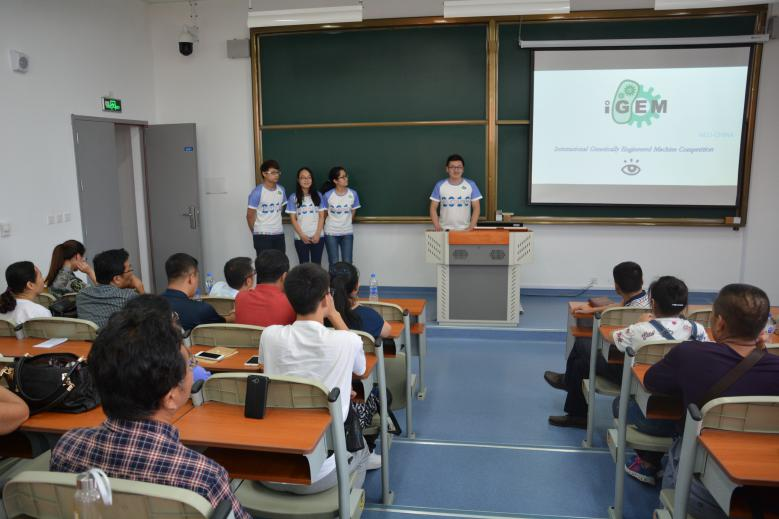
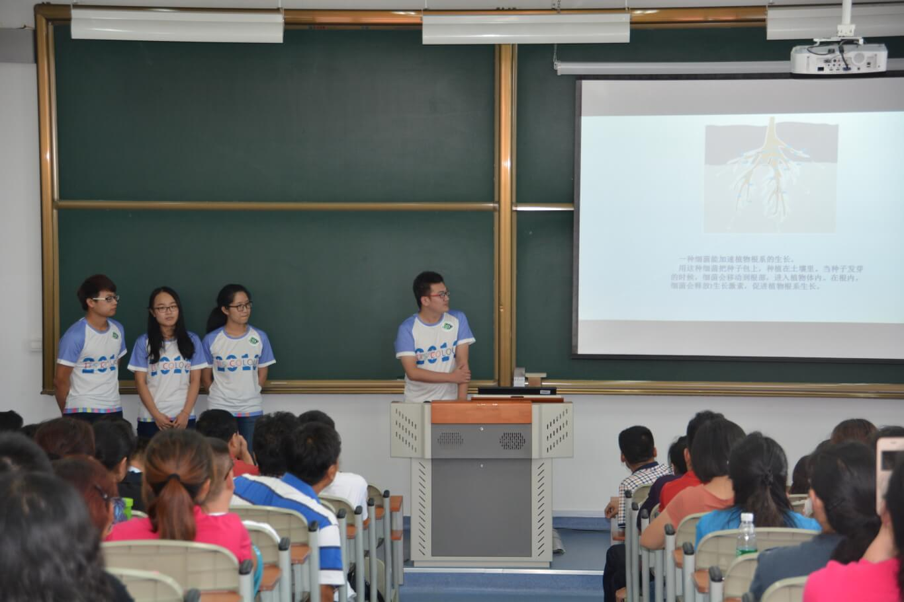
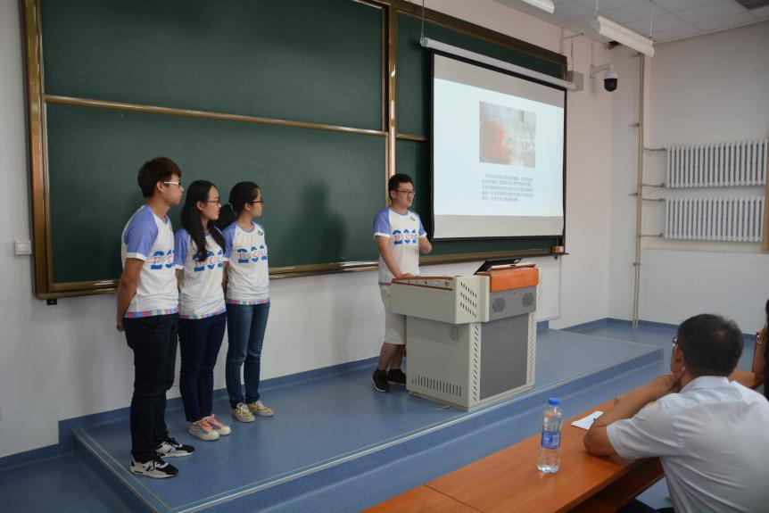
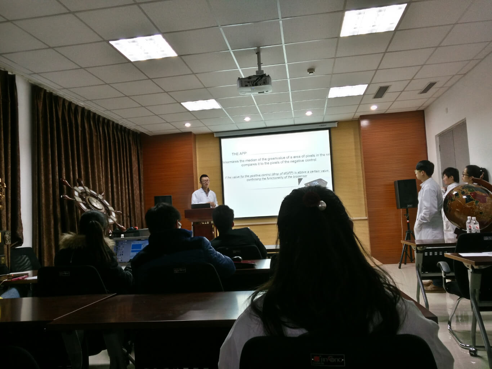
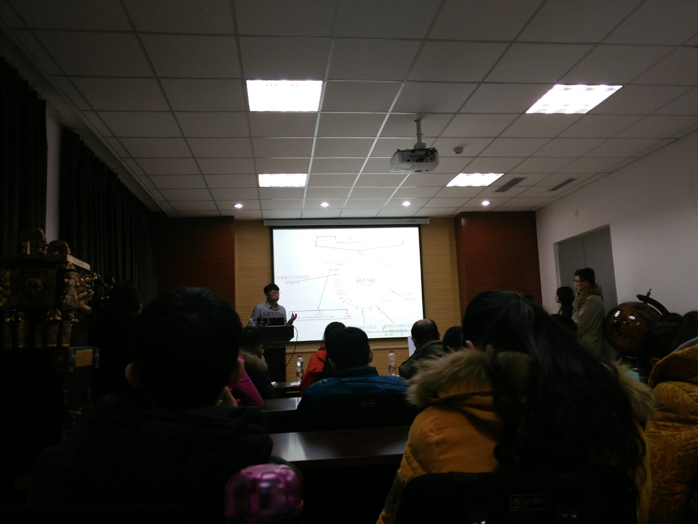
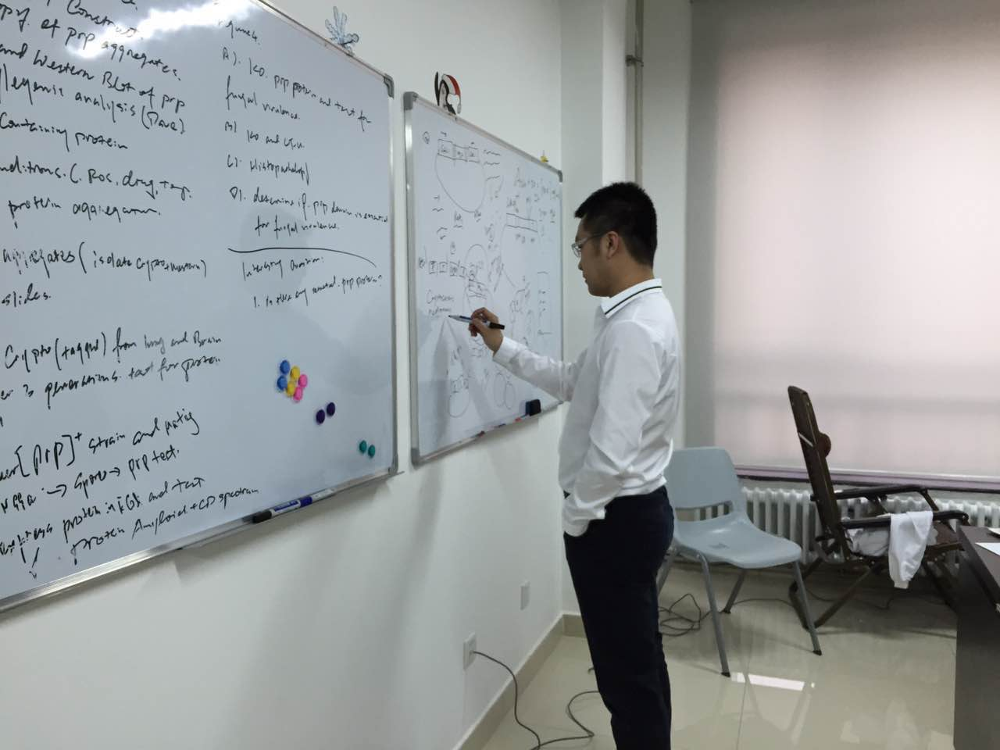
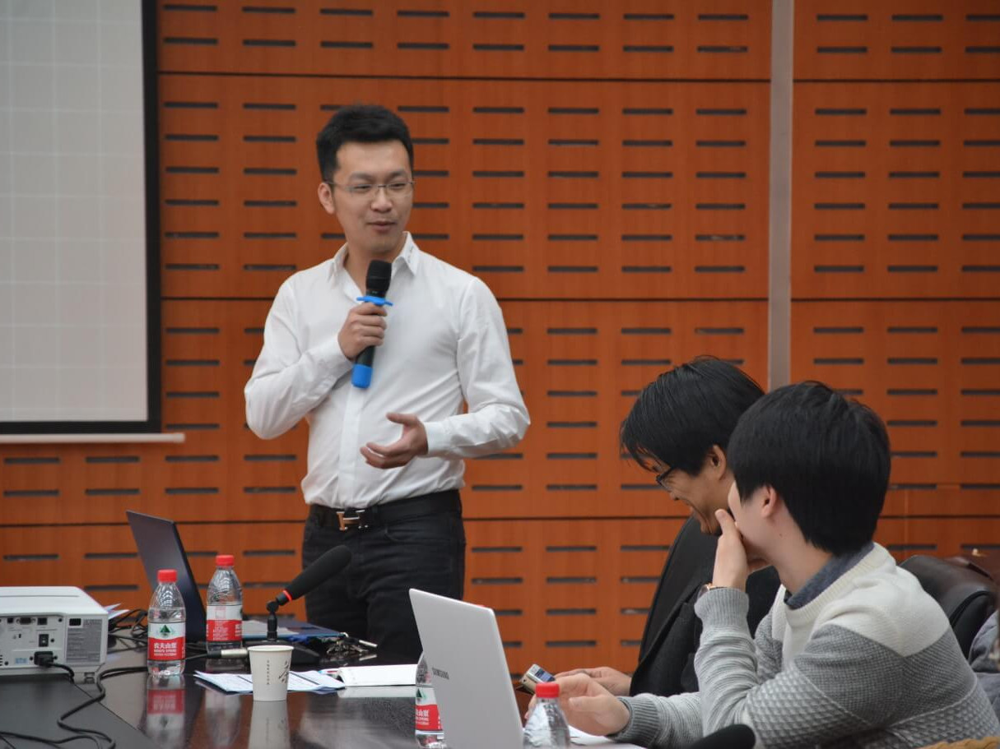

Parent-freshmen session
On 14/9/2016, our college held a parent-freshman session on the occasion of the freshman registration. In this time, freshmen together with their parents were not so familiar with biology engineering - the field they would step into in the future. We thought that it was a perfect chance for us to introduce something professional and interesting about biology to those freshmen who were possible to become pioneers in the field of biology research. What’s more, it was also a good opportunity to investigate which biological problems were concerned about mostly or wanted to be explained scientifically in parents' age groups. Some professor and teachers attended that sessions at the same time, and they played an important role to answer the questions lifted by parents and students.

First of all, four members of our team made a report about the iGEM competition. All of the freshmen, parents and teachers present had a deeper impression of iGEM which was the highest level of competition in the field of synthetic biology after introduction. We recommended a book -《Introduction to synthetic biology》 published by sciencepress - to freshmen in order to propaganda the synthetic biology under the circumstances that no associated subject was opened in our college. We reckoned that it was not difficult for them to understand the content of this book,and this book would help them to learn more about synthetic biology. We explained some excellent projects of previous team for them. This would allow them to understand competition better, so that they could connect the daily life with science easily. Of course, we also brought about our project to share with them even though our presentation was not complete at all at that time, but the effect was okay!

We left enough time to communicated with each other. During this time, we asked freshmen something about gene editing such as CRISPR/Cas9 system mentioned in out presentation. Most of them said that what they had learned before was not connected with gene editing, and they were extremely interested in that technology. What impressed us mostly was that a freshman from Liaoning province talked about TALEN targeting cutting unexpectedly! He said that it was when he studied double-helix gene that his teacher taught him something associated. By the way, parents at present expressed their opinions about biology from their perspectives. The hot topics they concerned about was in agreement with the results of street survey and online questionnaire we did before. Amount of question were proposed about genetically modified food and organ transplant. Some were connected with medicine therapy and bio-energy. Actually there were few parents to question the scientific nature of traditional Chinese Medicine! Of course, all of the questions were solved and explained perfectly through our efforts. And we also learned a lot from the professor's solution!
Finally, the Parent-freshmen session was ended successfully!

Workshop
We had did a survey among the citizens by filling in the questionnaire in the street and on the web. The survey groups we focused on at that time was ordinary people from all occupations. Then, we made a report themed at iGEM in the Parent-freshmen session, freshmen and their parents are the service objects at this time. With the specialization of the group of objects, we planned to call for a seminar for students who undertook a certain project in the laboratory.
 
The groups attending this workshop belonged to professor Ding’s lab. What they researched was related to gene acetylation, prion, and infection experiment. We hoped to learn and serve during that workshop. We introduced iGEM foundation and competition for them. Synthetic biology was also recommended by us, because we think it will provide a completely experimental thinking for them. In view of the experimental technique, we recommended the bio-brick enzyme cutting site to each experimental group, this can greatly improve the efficiency of their experiments obviously. We discussed about the basic mechanism of CRISPR/Cas9 system, the application of this technology in many ways. However, in the optimization of gRNA targeting efficiency, we have different ideas, which also provides some new ideas for our experiment. After listening to the description of our project, they were interested in light regulation, especially light acting as input signal to regulated downstream process. They said that light-inducible system would be extremely convenient compared with other induce methods. At last, out instructor - professor Ding - gave us some precious suggestions based on the progress we had made. He said that we were supposed to read more paper and literature to enrich the scope of our knowledge, broaden the horizons of our eyesight. We are very grateful to all of students for their participation and advice, but also very happy to let them know about the iGEM contest as well as our project. After all, we still need to work hard!